02
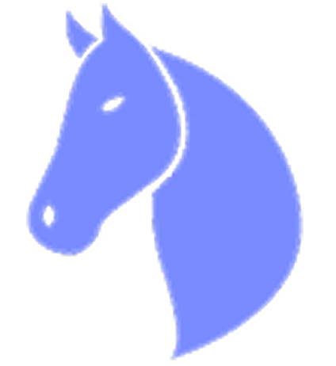
Adelphi Media
A website for an advertising and public relations small business.
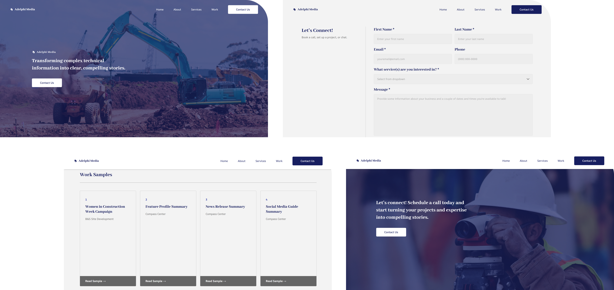
Background
Adelphi Media is a business that provides advertising and public relations for construction, HVAC, and similar companies. I designed a website, following an end-to-end ux process from interviews and market research to hi-fi prototypes and developer handoff.
This project was conducted for a client of Kepha LLC, a business I co-founded and lead designs for.
Overview
Problem
1. Adelphi Media needed another way to bring in clients outside of just word-of-mouth.
2. Adelphi Media wanted to expand their online presence so potential clients could find more information.
User Goals
1. Find information quickly and effectively.
2. Identify whether Adelphi Media could meet their business needs.
3. Easily contact Adelphi Media if they were interested in a service or had questions.
Limitations
• Due to the market's small size, it was difficult to find business owners, particularly in construction-related industries. As a result, interviews were conducted with business owners from diverse backgrounds and fields.
• Upon project completion, Adelphi Media paused taking in clients, which is currently delaying usability testing and further website iterations.
Results
1. Designed the Adelphi Media informational website, including responsive mobile, tablet, and desktop versions.
2. Worked closely with Kepha’s developer to include logging of contact form numbers and site visitors to record conversion rates and retention to support future usability testing.
3. Established a new channel for construction business owners to reach Adelphi Media, increasing the number of potential clients.
Research
Target Audience
Construction business owners.
Competitive Analysis – Four Construction Advertising/PR Firms
Goal – Identify what similar businesses’ websites look like and what information they have.
Common Strengths
- Clear call to action.
- Clear and simple designs.
Common Weaknesses
- High information density with low visual hierarchy.
- Lack of consideration for Jakob’s Law, such as making every page look like a landing page.
Overall Findings
- They all had an expertise and industries section for which audiences they tailored services for, increasing credibility for their services.
- Case studies with tangible impact, which show credibility.
- Team pages, which build trust and personality.
Personas
Market Research – Browsed forums such as Quora, Reddit, blogs, and other articles to get a sense of what business owners looked for in advertising/PR firms.
AI Market Research – Prompted AI chatbots to target data specifically for construction business owners, and verified its sources to ensure the information was as reliable as possible.
Interviews – Conducted 3 interviews with business owners in a variety of fields.
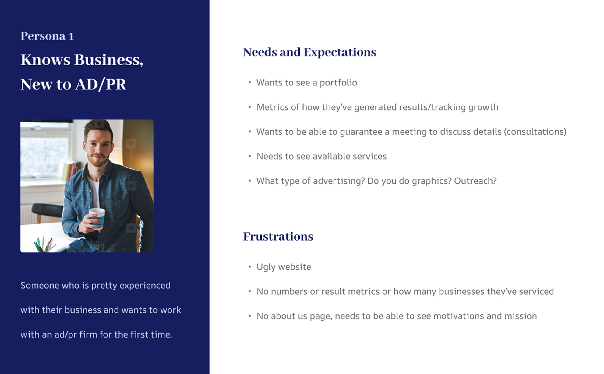
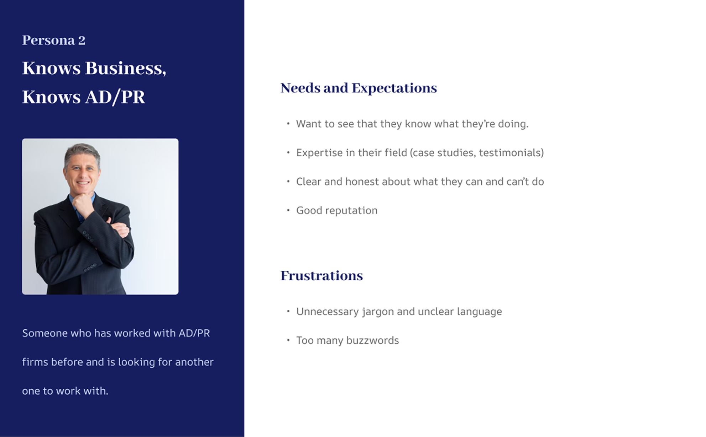
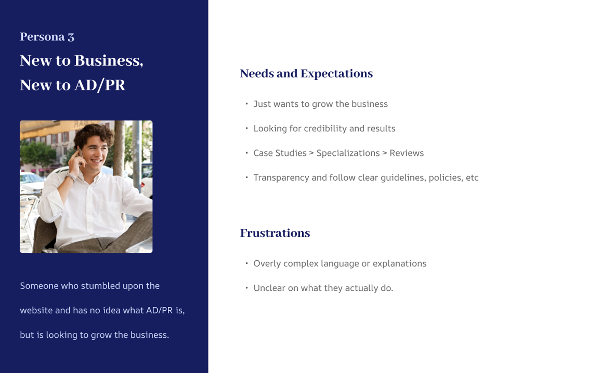
Key Findings
- Business owners are generally very risk-averse and need to see credibility.
- They want to see that Adelphi Media’s work has impact.
- They need to see that Adelphi Media already has a good reputation.
- Business owners prefer firms that offer specific industry expertise rather than general services.
- They are frustrated by buzzwords and jargon, preferring plain language and realistic promises.
Design Process
Notes to the Client
- Use clear language.
- Don’t use jargon unless necessary.
- Emphasize mission through about page.
- Emphasize field specialization (HVAC, construction, etc.) throughout the website.
Notes for Designs
- Clear hierarchy, consistent design.
- Have the style guide match the mission and the company.
- Emphasis on clarity and simple results -> simple and clear design.
- Clear CTA.
- Low complexity to reduce cognitive load for individuals in mid 40s – 50s looking to search site.
Sketches
After creating a new site + feature map that was approved by the client, I sketched out different variations of each section of the page.
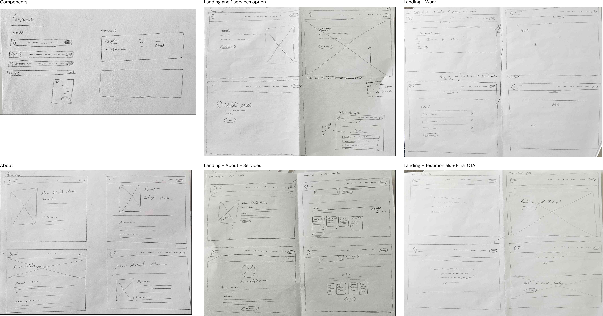
Wireframes
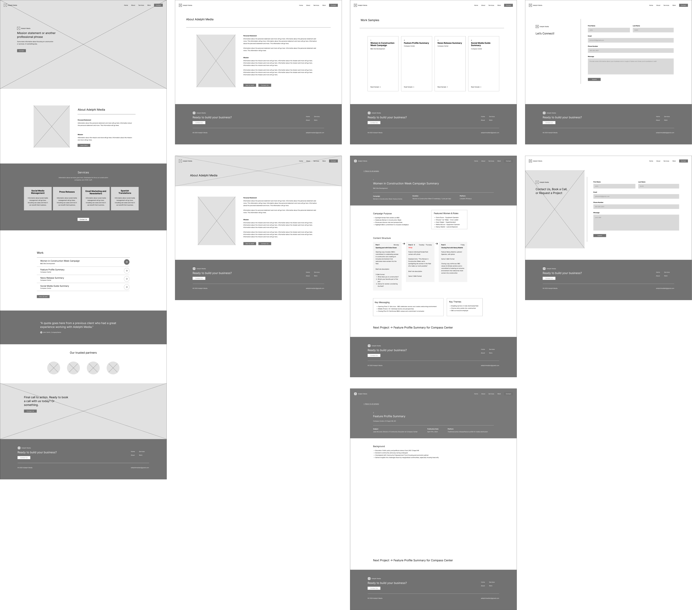
Style Guide
My aim for the website’s theme and branding was to maintain the advertising/PR stylistic and formal feel while balancing the construction aspects of the services. The resulting style guide was heavy towards the advertising/PR style, while construction-related images were applied to balance it out and show expertise in both areas.
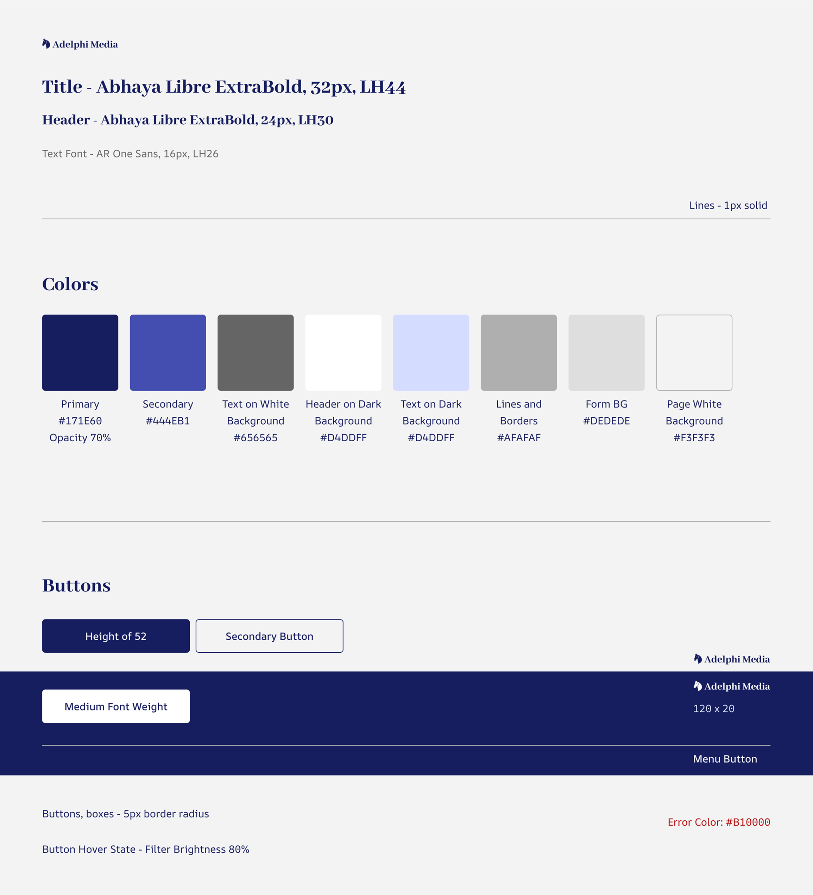
Final Mockup
Home
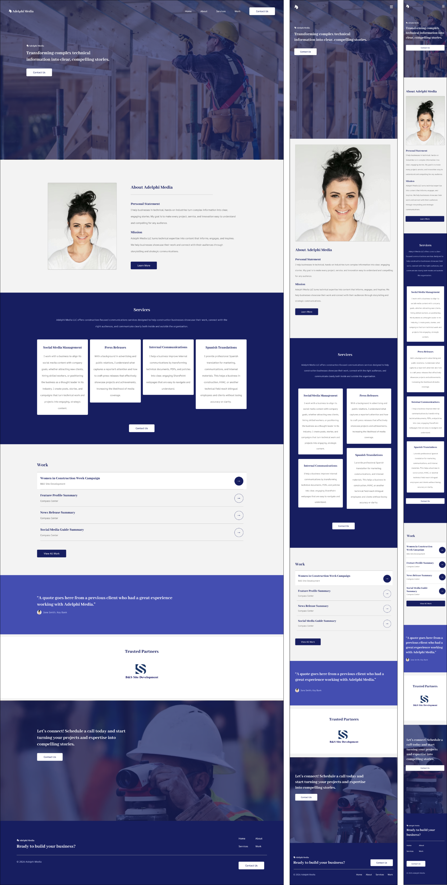
About
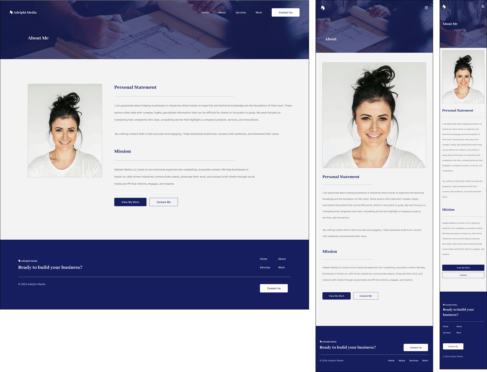
Work Samples
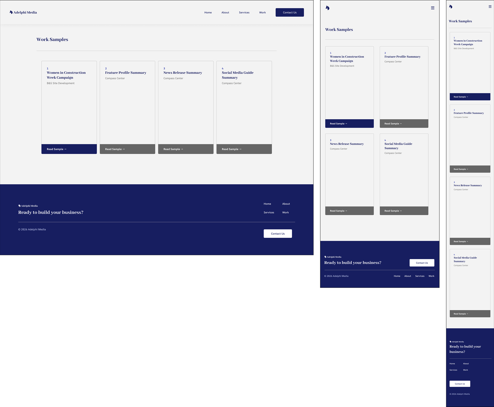
Contact Form
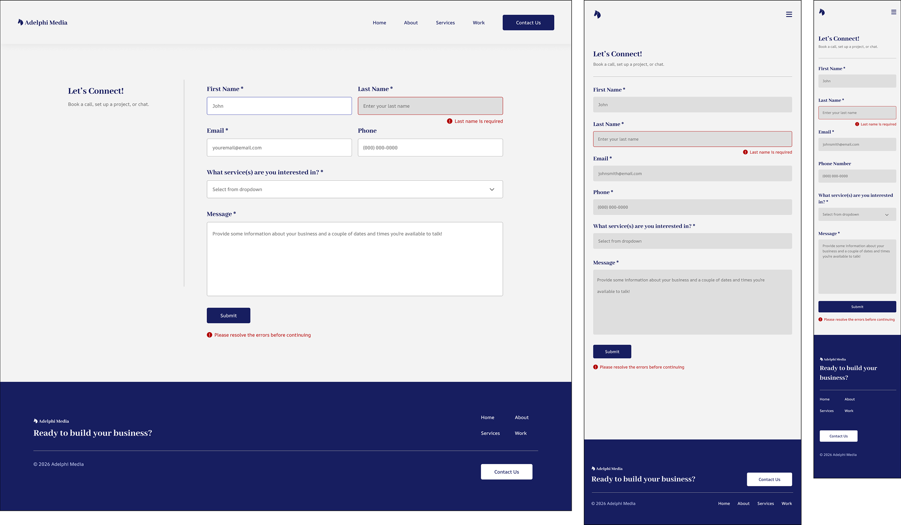
Individual Case Study
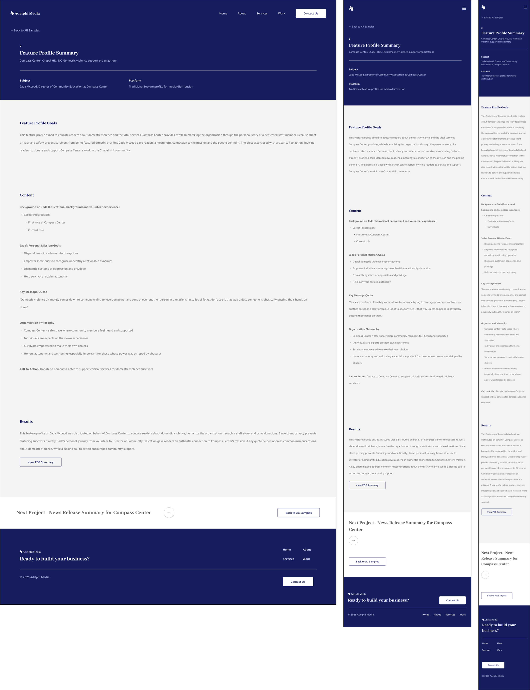
Conclusion
Reflection
This project is a recent example of client work I’ve completed and adapting to specific user needs and client expectations. I also needed to be much more intentional with branding and how Adelphi Media’s brand would be perceived, balancing both the construction-focus and the advertising/PR services that it provides.
I also worked closely with our developer in Kepha, meeting frequently to smoothen out inconsistencies after development to ensure that all elements were accurate to the original designs.
Next Steps
1. After 3 – 4 months, check conversion rates and time spent on each page to identify points of friction in filling out the contact form.
2. Conduct unmoderated usability tests through UserZoom and UserTesting to determine if certain tasks, like finding case studies or filling out the contact form, are difficult or could be streamlined.